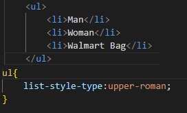

Seznamy se dělí na číslované a nečíslované, a také můžeme udělat seznam v seznamu, ukázka uvedena níže.
Pro číslované seznamy používáme element <ol>...</ol>
Pro nečíslované seznamy používáme element <ul>...</ul>
Abychom v seznamu udělali položky, tak se používá <li>...</li>
Pokud bychom ale nechtěli aby seznam měl odrážky nebo chtěli odrážky změnit, tak můžeme ve stylizaci použít list-style-type: ...
